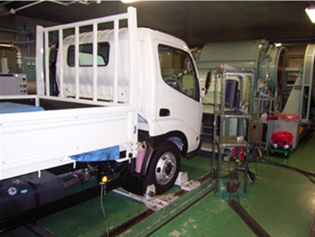

光励起-共鳴多光子イオン化法による分子のイオン化
光励起では光子のエネルギー、hνがそのまま分子に与えられます。したがって、光励起の一種である光イオン化ではイオンに与えるエネルギーを極めて精密に制御することができます。これによりイオン化に伴うフラグメンテーションを抑制することが可能となります。というのも、光励起以外の方法でイオン化されたイオンは過剰エネルギーをもっており、この過剰エネルギーにより解離反応（フラグメンテーション）が起こると考えられているからです。光イオン化では、波長可変レーザーや軌道放射光のように波長可変かつ単色性の高い光源を用いることによってイオン化ポテンシャルぎりぎりのイオン化が可能となり、過剰エネルギーをゼロにすることも可能です。このことから、光イオン化は分子を全く解離させない究極的ソフトイオン化法に成り得るポテンシャルを持っているといえます。
レーザーは単色性に優れた高輝度光源であり、他の光源では困難な非線形光学過程を引き起こすことができる。１つの分子が一度に複数の光子を吸収する多光子吸収、多光子イオン化はこの代表的な物である。なぜレーザー光源により多光子吸収が容易に実現されるのであろうか。これは、光吸収を分子と光子の衝突として考えるとわかりやすい。ランプのような通常の光源からの光は密度が低く、相対的に試料分子の密度の方が遙かに高い。従って１個の分子には一度に１個の光子しか衝突しないので、光吸収は１光子のみが関与する。一方、レーザー光は高輝度で光子密度が高いため、１分子に対して数個の光子が同時に衝突できるため、通常の光源では誘起困難な多光子吸収を容易に生じさせることができる。
多光子イオン化分光法の原理
レーザーは単色性に優れた高輝度光源で、他の光源では困難な非線形光学過程を引き起こすことができます。1つの分子が一度に複数の光子を吸収する多光子吸収、多光子イオン化はこの代表的なものです。なぜレーザー光源により多光子吸収が容易に実現されるのでしょうか。これは、光吸収を分子と光子の衝突として考えると容易に理解できます。ランプのような通常の光源からの光は密度が低く、相対的に試料分子の密度のほうがはるかに高くなります。したがって1個の分子には一度に1個の光子しか衝突することができず、1光子吸収のみが起こります。一方、レーザー光は高輝度で光子密度が高く、1分子に対して複数の光子が同時に衝突できるので、通常の光源では起こすことが難しい多光子吸収を容易に起こすことができます。

図1に多光子イオン化の原理を示します。試料分子に十分強力なレーザー光を照射した場合、試料分子が2個以上の光子を同時に吸収してイオン化します。図に示した2光子吸収によるイオン化（2光子イオン化）はもっとも簡単な場合で、イオン化ポテンシャルIP0の1/2以上のエネルギーのレーザー光を照射することで容易に検出することができます。例えばベンゼンの場合はイオン化ポテンシャルが9.25 eV ≈ 74600 cm-1（~134 nmの光に相当）なので、その半分以上のエネルギーである37300 cm-1 = 268 nmよりも短波長の紫外レーザー光を入射すると2光子イオン化が起こります。これは、光源に関して大変重宝な特徴です。というのも、ベンゼンは従来の1光子イオン化であれば134 nmより短波長の光を導入しない限りイオン化できませんが、このような200 nmよりも短波長の紫外光は空気を透過できないため全光路を真空する必要があるのに対し、多光子イオン化の場合には空気中で通常に取り扱うことが可能な近紫外光でイオン化できるため、装置構成と取り扱いが容易になるからです。
多光子イオン化の確率Wは下記の式で表されます。ここでμは双極子演算子、e1、e2は入射レーザーの1光子目と2光子目の電場ベクトル、ES1-S0は試料分子の電子励起状態S1と基底状態S0のエネルギー差です。すべての電子励起状態の寄与を考慮するという意味で総和をとっています。

この式で重要な点は、電子励起状態と入射したレーザーのエネルギー差が分母になっているということです。これは、レーザーの波長が電子励起状態に共鳴した場合、イオン化強度が著しく増大することを示しています（図1b）。この共鳴効果は共鳴多光子イオン化（Resonance Enhanced Multi-Photon Ionization : REMPI）と呼ばれ、多光子イオン化の極めて重要な特徴となっています。ちなみに、この共鳴効果はRaman散乱における共鳴効果と本質的に同じものです。
この共鳴効果の1つ目の意義は、共鳴効果によってイオン化効率が一気に増大するために、適切なイオン化波長を選択することによって感度を大きく向上させることができることです。もう1つの意義は、共鳴効果によって試料分子ごとに顕著な波長依存性が表れるため、これを利用することで、質量だけではなく励起光の波長によっても特定の試料だけを選択的にイオン化できるということです。これにより、波長可変レーザーを用いてレーザー波長を自由に掃引できる場合には、いわゆる可視・紫外吸収スペクトルと同等のスペクトルが多光子イオン化の増大として得られます（図1参照）。この点が通常の質量分析と決定的に異なる点であり、質量と共鳴波長という二次元的な分析が可能となります。特に重要なのは、通常の質量分析では分離同定困難な異性体の識別です。異性体分子は質量が同じでも電子励起状態のエネルギーが異なっているので、共鳴波長を適切に選択すれば特定の異性体だけをイオン化して分離検出することが可能となります。
実験装置-超音速ジェット多光子イオン化
多光子イオン化では超音速ジェットあるいは超音速分子線と組み合わせた実験が一般的です。超音速ジェットとは簡単に言うと、試料気体を小さな穴から真空中に断熱膨張して得られる過渡状態のことです。断熱膨張によって試料は数～数十Kの極低温に冷却されます。にもかかわらず真空中の気体膨脹なので試料は気体のままで凝集しません。これは極低温孤立分子状態という、分光・分析にとっては理想的な環境であり、レーザーの出現と同じく分光学に革命的変化をもたらした方法です。
分析への応用を念頭に置いて我々が製作した超音速分子線発生用の分光真空槽の構成概念図を図2に示します。装置は超音速分子線発生系と質量分析／イオン検出系から構成されています。試料気体は検出器とは対面側から100 μmほどの径のピンホールノズルを通して真空槽内に噴射され、断熱膨張されます。冷却された試料気体に、真空槽側面にある石英窓より導入されたレーザー光を照射することでイオン化します。ここで、真空槽内に試料気体が滞留するとイオンとの衝突が起こり、生成したイオンが検出器に到達する前に失活してしまいます。そこで排気量の大きなポンプを使って真空槽を排気しなければなりません。

レーザー多光子イオン化で生じるイオンは4重極マスフィルターまたは飛行時間型質量分析されるのが一般的です。我々の装置では飛行時間型質量分析装置を用いており、イオンはイオンレンズからドリフトチューブに送り込まれて飛行した後、イオン検出器で検出されます。イオンの質量によって電場による加速度が異なるため、レーザーを照射してから検出器に到達する時間によって質量を決定することができます。この飛行時間と質量の関係は、用いるイオンレンズやその設定で変動するため、装置関数として適当な標準試料（例えばベンゼン）を用いて適宜校正する必要があります。
実例
実際の分析例として、自動車排出ガス中の有害有機化合物のリアルタイム分析を紹介します。自動車の排気ガス中には燃料が蒸発または燃焼して生成した多種多様の有害化合物が混在しています。現在広く用いられているガスクロマトグラフィー質量分析（GC-MS）などの分析方法でこのような混合ガスを分析するためには、排出ガスをサンプルバッグで採集し化合物の分離や濃縮をする必要がありました。この作業には数時間から数日程度の時間を費やさねばならないので、自動車の排出ガスの成分や濃度が実際の運転中にどのように変化しているのかは分かりません。しかし、我々の用いているレーザーイオン化法では適切なレーザー波長と観測する質量数を選択するだけで混合ガスの中からでも特定の対象分子のみをイオン化して検出することができるため化合物の分離作業をする必要がなく、また非常に高感度なため濃縮作業も必要ありません。したがって、混合ガスの成分や濃度の変化をリアルタイムに観測することが可能です。

実際に自動車排出ガスをリアルタイム測定した例を示します。測定した車両はディーゼルトラックで共同研究者の（独）交通安全環境研究所の所有するシャシーダイナモメータ上で車両を走行させました（図3）。 シャシーダイナモメータはローラー上で車両を運転することで車両を移動させることなくその場で実際の走行に近い条件で車両を運転させることのできる装置です。車両は車検等に使われている走行パターンで都市近郊での走行を模擬したJE05モードという走行パターンで運転させました。排出ガスは車両のテールパイプから加熱配管を通して直接レーザーイオン化分析装置内に導入しました。排出ガス中のフェノールおよびベンゼンをリアルタイム測定した結果を図4(a)、(b)に示します。 また走行パターンのグラフを図4(c)に示します。図から車両の走行速度の変化に応じてフェノールおよびベンゼンの濃度が変化していることが分かります。
この車両では、ベンゼンは数10 ppbから1 ppmの間で濃度変化しており、アイドリング時に濃度が高く走行時に濃度が低いという結果になりました。また、フェノールは高速走行の時のみに排出されるということが分かりました。ほかの車種についても同様の測定を行ったところ、この車両とは全く異なる濃度変化の傾向が見られました。このように、リアルタイムの濃度変化をとらえたり、車種ごとの排出傾向の違いをとらえることができるのがこのレーザーイオン化分析装置の大きな利点です。

このレーザーイオン化を応用した質量分析は自動車の排出ガス以外にも、焼却炉からの排出ガスやたばこなど『ガス』状のものならば分析することが可能です。今後も環境分野への応用だけでなく医学分野などへの応用も期待されます。